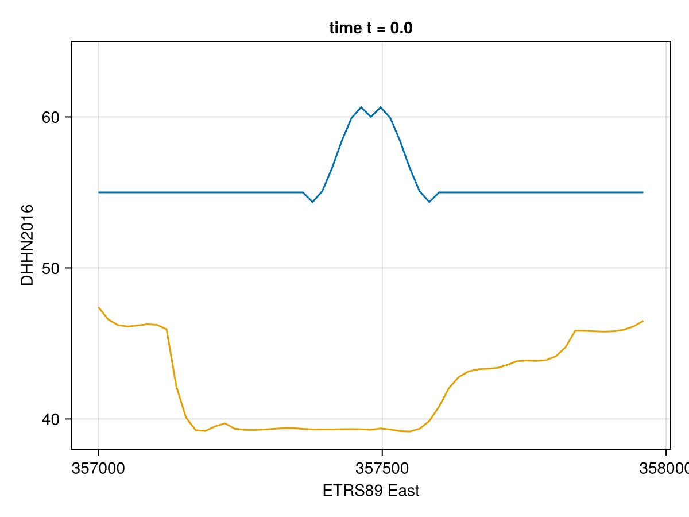

Examples with Trixi.jl
As mentioned in the Home section of this documentation, TrixiBottomTopography.jl was initially developed as a supplementary package for the numerical solver Trixi.jl to enable the user to use real world geographical data for the bottom topography function of the shallow water equations. TrixiBottomTopography.jl can also be used together with TrixiShallowWater.jl a solver suite specifically designed for shallow water flow applications. An example that combines TrixiBottomTopography.jl with wet/dry transitions and shock capturing to model a tsunami runup is available as a tutorial in TrixiShallowWater.jl.
One dimensional dam break
In this section, a one dimensional example is presented which uses the functionalities of TrixiBottomTopography.jl with Trixi.jl to simulate a dam break problem.
The underlying example file can be found here.
First, all the necessary packages must be included at the beginning of the file.
# Include packages
using TrixiBottomTopography
using CairoMakie
using OrdinaryDiffEqLowStorageRK
using Trixi- CairoMakie.jl is the Makie.jl backend responsible for visualizing the approximate solution of the dam break problem.
- OrdinaryDiffEqLowStorageRK.jl is a sub-package of OrdinaryDiffEq.jl that must be added to load low-storage explicit Runge-Kutta methods to be used by Trixi.jl.
Next, the underlying bottom topography data is downloaded from a gist.
# Download one dimensional Rhine bottom data from gist
Rhine_data = download("https://gist.githubusercontent.com/maxbertrand1996/19c33682b99bfb1cc3116f31dd49bdb9/raw/d96499a1ffe250bc8e4cca8622779bae61543fd8/Rhine_data_1D_40_x_841.txt")The downloaded data is then used to define the B-spline interpolation function as described in B-spline structure and B-spline function. In this case, a cubic B-spline interpolation function with free end condition is chosen.
# B-spline interpolation of the underlying data.
# The type of this struct is fixed as `CubicBSpline`.
const spline_struct = CubicBSpline(Rhine_data)
spline_func(x::Float64) = spline_interpolation(spline_struct, x)spline_func (generic function with 1 method)Now that the B-spline interpolation function is determined, the one dimensional shallow water equations implemented in Trixi.jl can be defined by calling:
# Defining one dimensional shallow water equations
equations = ShallowWaterEquations1D(gravity_constant = 1.0, H0 = 55.0)┌──────────────────────────────────────────────────────────────────────────────────────────────────┐
│ ShallowWaterEquations1D │
│ ═══════════════════════ │
│ #variables: ………………………………………………… 3 │
│ │ variable 1: …………………………………………… h │
│ │ variable 2: …………………………………………… h_v │
│ │ variable 3: …………………………………………… b │
└──────────────────────────────────────────────────────────────────────────────────────────────────┘Here the gravity constant has been chosen to be $1.0$, and the background total water height $H_0$ has been set to $55.0$.
Next, the initial condition for the dam break problem can be defined. At time $t=0$, a part of the water height in the center of the domain with a diameter of $100$ is set to $60.0$ while the rest of the domain stays at the background water height $55.0$. Additionally, we can see that the bottom topography b is defined by the B-spline interpolation function spline_func and is set in the initial condition.
# Defining initial condition for the dam break problem
function initial_condition_dam_break(x, t, equations::ShallowWaterEquations1D)
inicenter = SVector(357490.0)
x_norm = x[1] - inicenter[1]
r = abs(x_norm)
# Calculate primitive variables
H = r < 50 ? 60.0 : 55.0
v = 0.0
b = spline_func(x[1])
return prim2cons(SVector(H, v, b), equations)
endinitial_condition_dam_break (generic function with 1 method)After the initial condition, we can set the boundary conditions. In this case, a reflective wall condition is chosen, which is already implemented in Trixi.jl for the one dimensional shallow water equations.
# Setting initial condition
initial_condition = initial_condition_dam_break
# Setting the boundary to be a reflective wall
boundary_condition = boundary_condition_slip_wallboundary_condition_slip_wall (generic function with 11 methods)The upcoming code parts will not be covered in full detail. To get a more profound understanding of the routines, please see the Trixi.jl documentation.
The following code snippet sets up the discontinuous Galerkin spectral element method (DGSEM). In this solver type, we can specify which flux functions for the surface and volume fluxes will be taken, as well as the polynomial degree (polydeg) of the polynomials used in the approximation space.
###############################################################################
# Get the DG approximation space
volume_flux = (flux_wintermeyer_etal, flux_nonconservative_wintermeyer_etal)
solver = DGSEM(polydeg=3, surface_flux=(flux_hll, flux_nonconservative_fjordholm_etal),
volume_integral=VolumeIntegralFluxDifferencing(volume_flux))┌──────────────────────────────────────────────────────────────────────────────────────────────────┐
│ DG{Float64} │
│ ═══════════ │
│ basis: ……………………………………………………………… LobattoLegendreBasis{Float64}(polydeg=3) │
│ mortar: …………………………………………………………… LobattoLegendreMortarL2{Float64}(polydeg=3) │
│ surface integral: ………………………………… SurfaceIntegralWeakForm │
│ │ surface flux: ……………………………………… (FluxHLL(min_max_speed_davis), T…nonconservative_fjordholm_etal) │
│ volume integral: …………………………………… VolumeIntegralFluxDifferencing │
│ │ volume flux: ………………………………………… (Trixi.flux_wintermeyer_etal, Tr…nconservative_wintermeyer_etal) │
└──────────────────────────────────────────────────────────────────────────────────────────────────┘After the solver comes the specification of the mesh in the approximation. In this case, a TreeMesh is chosen, which is a Cartesian mesh. Here the domain borders must be defined, as well as the number of initial elements ($2$ to the power of initial_refinement_level). Also, we have to indicate if the domain is periodic. In this example, boundary conditions were defined. Thus the periodicity is set to false.
Once the underlying mesh is constructed, a semidiscretization object can be created by calling SemiDiscretizationHyperbolic. This collects all the building blocks needed to set up the semidiscretization:
- The underlying mesh.
- The set of equations.
- The initial condition.
- The solver (in this case DGSEM).
- The boundary conditions.
###############################################################################
# Get the TreeMesh and setup a periodic mesh
coordinates_min = spline_struct.x[1]
coordinates_max = spline_struct.x[end]
mesh = TreeMesh(coordinates_min, coordinates_max,
initial_refinement_level = 3,
n_cells_max = 10_000,
periodicity = false)
# create the semi discretization object
semi = SemidiscretizationHyperbolic(mesh, equations, initial_condition, solver,
boundary_conditions = boundary_condition)┌──────────────────────────────────────────────────────────────────────────────────────────────────┐
│ SemidiscretizationHyperbolic │
│ ════════════════════════════ │
│ #spatial dimensions: ………………………… 1 │
│ mesh: ………………………………………………………………… TreeMesh{1, Trixi.SerialTree{1, Float64}} with length 15 │
│ equations: …………………………………………………… ShallowWaterEquations1D │
│ initial condition: ……………………………… initial_condition_dam_break │
│ boundary conditions: ………………………… 2 │
│ │ negative x: …………………………………………… boundary_condition_slip_wall │
│ │ positive x: …………………………………………… boundary_condition_slip_wall │
│ source terms: …………………………………………… nothing │
│ solver: …………………………………………………………… DG │
│ total #DOFs per field: …………………… 32 │
└──────────────────────────────────────────────────────────────────────────────────────────────────┘An ordinary differential equations object is set up using a specified time range, tspan, and the semidiscretization object, semi.
###############################################################################
# ODE solvers
tspan = (0.0, 100.0)
ode = semidiscretize(semi, tspan)The ordinary differential equations object ode is solved by the function sol which is part of the OrdinaryDiffEq.jl package. Here the time stepping method can be specified (in this case, RDPK3SpFSAL49()) as well as some tolerances responsible for an error-based time step control.
###############################################################################
# run the simulation
# define equidistant nodes in time for visualization of an animation
visnodes = range(tspan[1], tspan[2], length = 90)
# use a Runge-Kutta method with error-based time step size control
sol = solve(ode, RDPK3SpFSAL49(), abstol = 1.0e-8, reltol = 1.0e-8,
saveat = visnodes)At this point, the calculation is finished. However, to visualize the dam break problem, we want to create an animation of the solution to show its evolution over time. Above we created a uniform set of points in time visnodes and used the saveat attribute so that the solve saves solution information at these check-in values.
We use the plotting backend CairoMakie.jl for this purpose. To create an animation we use the record structure to save plots over every time step of the simulation and append them together into an animation. Inside the loop, the PlotData1D functionality from Trixi.jl is called to create a plotting object. Afterwards, this plotting object is visualized using the lines command from Makie.
Two Observable quantities are created, one to increment the number of plots and another for the time at which each solution occurs. The resulting animation is given below.
# Create animation of the solution
j = Observable(1)
time = Observable(0.0)
pd_list = [PlotData1D(sol.u[i], semi) for i in 1:length(sol.t)]
f = Figure()
title_string = lift(t -> "time t = $(round(t, digits=3))", time)
ax = Axis(f[1, 1], xlabel = "ETRS89 East", ylabel = "DHHN2016",
title = title_string)
height = lift(i -> pd_list[i].data[:, 1], j)
bottom = lift(i -> pd_list[i].data[:, 3], j)
lines!(ax, pd_list[1].x, height)
lines!(ax, pd_list[1].x, bottom)
ylims!(ax, 38, 65)
record(f, "animation.gif", 1:length(pd_list)) do tt
j[] = tt
time[] = sol.t[tt]
end
Two dimensional dam break
The underlying example file can be found here.
The two dimensional example is similar to the one dimensional case.
First, all the necessary packages and the underlying bottom topography data are loaded.
# Include packages
using TrixiBottomTopography
using CairoMakie
using OrdinaryDiffEqLowStorageRK
using Trixi
Rhine_data = download("https://gist.githubusercontent.com/maxbertrand1996/a30db4dc9f5427c78160321d75a08166/raw/fa53ceb39ac82a6966cbb14e1220656cf7f97c1b/Rhine_data_2D_40.txt")Using the data, a bicubic B-spline interpolation is performed on the data to define a bottom topography function.
# B-spline interpolation of the underlying data.
# The type of this struct is fixed as `BicubicBSpline`.
const spline_struct = BicubicBSpline(Rhine_data)
spline_func(x::Float64, y::Float64) = spline_interpolation(spline_struct, x, y)spline_func (generic function with 1 method)Then the two dimensional shallow water equations are defined, where the gravitational constant has been chosen to be 3.0 and the initial water height 55.0. Afterwards, the initial condition is defined. Similar to the one dimensional case, in the center of the domain, a circular part with a diameter of 100.0 is chosen where the initial water height is chosen to be 10.0 units higher.
equations = ShallowWaterEquations2D(gravity_constant = 9.81, H0 = 55.0)
function initial_condition_wave(x, t, equations::ShallowWaterEquations2D)
inicenter = SVector(357490.0, 5646519.0)
x_norm = x - inicenter
r = sqrt(x_norm[1]^2 + x_norm[2]^2)
# Calculate primitive variables
H = r < 50 ? 65.0 : 55.0
v1 = 0.0
v2 = 0.0
x1, x2 = x
b = spline_func(x1, x2)
return prim2cons(SVector(H, v1, v2, b), equations)
end
# Setting initial condition
initial_condition = initial_condition_wave
# Setting the boundary to be a free-slip wall
boundary_condition = boundary_condition_slip_wallThis assigns the initial conditions and boundary conditions to appropriate names that can be passed to the forthcoming semidiscretization.
The DGSEM solver is set up as in the one dimensional case.
###############################################################################
# Get the DG approximation space
volume_flux = (flux_wintermeyer_etal, flux_nonconservative_wintermeyer_etal)
solver = DGSEM(polydeg=3, surface_flux=(flux_fjordholm_etal, flux_nonconservative_fjordholm_etal),
volume_integral=VolumeIntegralFluxDifferencing(volume_flux))┌──────────────────────────────────────────────────────────────────────────────────────────────────┐
│ DG{Float64} │
│ ═══════════ │
│ basis: ……………………………………………………………… LobattoLegendreBasis{Float64}(polydeg=3) │
│ mortar: …………………………………………………………… LobattoLegendreMortarL2{Float64}(polydeg=3) │
│ surface integral: ………………………………… SurfaceIntegralWeakForm │
│ │ surface flux: ……………………………………… (Trixi.flux_fjordholm_etal, Trix…nonconservative_fjordholm_etal) │
│ volume integral: …………………………………… VolumeIntegralFluxDifferencing │
│ │ volume flux: ………………………………………… (Trixi.flux_wintermeyer_etal, Tr…nconservative_wintermeyer_etal) │
└──────────────────────────────────────────────────────────────────────────────────────────────────┘Now the mesh has to be specified. As above, we use a Cartesian box mesh created as a TreeMesh in Trixi.jl. Because we have defined boundary conditions defined, we set the periodicity to be false.
###############################################################################
# Get the TreeMesh and setup a periodic mesh
coordinates_min = (spline_struct.x[1], spline_struct.y[1])
coordinates_max = (spline_struct.x[end], spline_struct.y[end])
mesh = TreeMesh(coordinates_min, coordinates_max,
initial_refinement_level = 3,
n_cells_max = 10_000,
periodicity = false)┌──────────────────────────────────────────────────────────────────────────────────────────────────┐
│ TreeMesh{2, Trixi.SerialTree{2, Float64}} │
│ ═════════════════════════════════════════ │
│ center: …………………………………………………………… [357480.0, 5.646519e6] │
│ length: …………………………………………………………… 960.0 │
│ periodicity: ……………………………………………… (false, false) │
│ current #cells: ……………………………………… 85 │
│ #leaf-cells: ……………………………………………… 64 │
│ maximum #cells: ……………………………………… 10000 │
└──────────────────────────────────────────────────────────────────────────────────────────────────┘When calling the semidiscretization object again, boundary_conditions does not have to be specified.
# create the semi discretization object
semi = SemidiscretizationHyperbolic(mesh, equations, initial_condition, solver,
boundary_conditions = boundary_condition)┌──────────────────────────────────────────────────────────────────────────────────────────────────┐
│ SemidiscretizationHyperbolic │
│ ════════════════════════════ │
│ #spatial dimensions: ………………………… 2 │
│ mesh: ………………………………………………………………… TreeMesh{2, Trixi.SerialTree{2, Float64}} with length 85 │
│ equations: …………………………………………………… ShallowWaterEquations2D │
│ initial condition: ……………………………… initial_condition_wave │
│ boundary conditions: ………………………… 4 │
│ │ negative x: …………………………………………… boundary_condition_slip_wall │
│ │ positive x: …………………………………………… boundary_condition_slip_wall │
│ │ negative y: …………………………………………… boundary_condition_slip_wall │
│ │ positive y: …………………………………………… boundary_condition_slip_wall │
│ source terms: …………………………………………… nothing │
│ solver: …………………………………………………………… DG │
│ total #DOFs per field: …………………… 1024 │
└──────────────────────────────────────────────────────────────────────────────────────────────────┘The solution of the PDE and the animation is analogous to the one dimensional case except that we chose PlotData2D to create the plotting object instead of PlotData1D as we are in the two dimensional case now.
As in the 1D example, we use the plotting backend CairoMakie.jl. To create an animation we use the record structure to save plots over every time step of the simulation and append them together into an animation. Inside the loop, the PlotData2D functionality from Trixi.jl is called to create a plotting object. Afterwards, this plotting object is visualized using the wireframe command to visualize the 2D water height evolution and surface to visualize bicubic B-spline approximation of the bottom topography. Two Observable quantities are created, one to increment the number of plots and another for the time at which each solution occurs. The the resulting animation is given below.
###############################################################################
# ODE solvers, callbacks etc.
tspan = (0.0, 100.0)
ode = semidiscretize(semi, tspan)
###############################################################################
# run the simulation
# define equidistant nodes in time for visualization of an animation
visnodes = range(tspan[1], tspan[2], length = 175)
# use a Runge-Kutta method with error based time step size control
sol = solve(ode, RDPK3SpFSAL49(), abstol = 1.0e-8, reltol = 1.0e-8,
saveat = visnodes);
# Create an animation of the solution
j = Observable(1)
time = Observable(0.0)
pd_list = [PlotData2D(sol.u[i], semi) for i in 1:length(sol.t)]
f = Figure()
title_string = lift(t -> "time t = $(round(t, digits=3))", time)
az = 130 * pi / 180
el = 18 * pi / 180
ax = Axis3(f[1, 1], xlabel = "E", ylabel = "N", zlabel = "H",
title = title_string, azimuth = az, elevation = el)
height = lift(i -> pd_list[i].data[1], j)
bottom = lift(i -> pd_list[i].data[4], j)
surface!(ax, pd_list[1].x, pd_list[1].y, bottom;
colormap = :greenbrownterrain)
wireframe!(ax, pd_list[1].x, pd_list[1].y, height;
color = Makie.RGBA(0, 0.5, 1, 0.4))
zlims!(ax, 35, 70)
record(f, "animation_2d.gif", 1:length(pd_list)) do tt
j[] = tt
time[] = sol.t[tt]
end